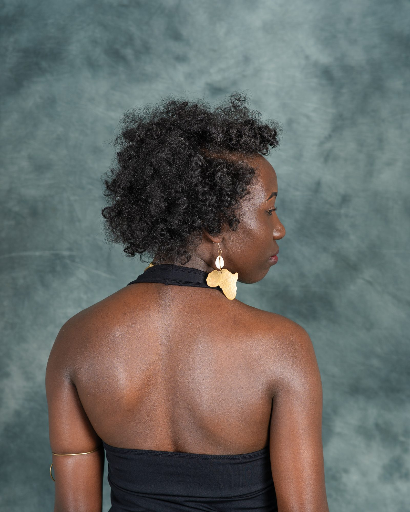
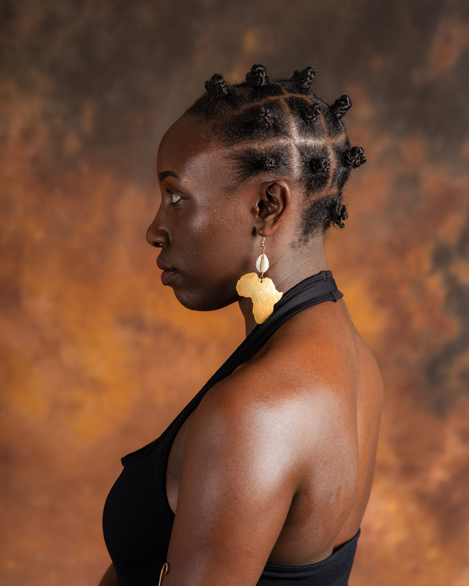

Learn & Explore
ROOTS. CULTURE. IDENTITY.
A living space for African hair knowledge, hairstyles, traditions and stories.
Educational stories and guides rooted in African hair knowledge, tradition and identity. Click any article to read in full.
Hair Care

Ancient Botanical Oils: Chebe, Marula, and Baobab
Traditional African oils that have nourished coils and retained moisture for generations.

The Science of Porosity and Coily Hair Retention
How high vs low porosity affects moisture and how to prevent breakage.

Nighttime Protection: Silk, Satin, and Hair Wrapping
Why wrapping your hair before sleep protects moisture, style and ends.
Hairstyles
Koroba Braids
Structured, ornamental braid artistry finished with shells and cultural pride.

Fulani Braids: Geometry, Beads, and Royal Origins
West African patterning, beads, and modern interpretations of a royal aesthetic.

Locs & Modern Traditions
Starting, maturing and maintaining locs while honouring cultural meaning.

Bantu Knots: Ancient Architecture for Everyday Hair
Zulu-rooted knots as protection and heatless curl technique.
Culture & Stories
The Natural Curly Afro
History and significance of the natural afro in Africa and the diaspora.

The Map on the Scalp
How braid patterns carried routes, messages and heritage under enslavement.

From Shea Butter to Clay
Pre-colonial hair rituals among Himba, Maasai, Yoruba and beyond.
The Return to the Crown
Unlearning texturism and reclaiming natural texture with ancestral pride.